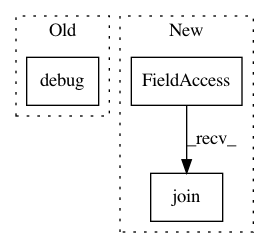

12bba41d0a8f8eb2f236f7efdd4f656338c1281b,luminoth/tools/dataset/readers/object_detection/csv_reader.py,CSVReader,iterate,#CSVReader#,76
Before Change
image_path = self._get_image_path(image_id)
if image_path is None:
tf.logging.debug(
"Could not find image_path for image "{}".".format(
image_id
))
self.errors += 1
continue
try:
After Change
if self._should_skip(image_id):
continue
image_path = os.path.join(self._images_dir, image_id)
try:
image = read_image(image_path)
except tf.errors.NotFoundError:
tf.logging.warning(
In pattern: SUPERPATTERN
Frequency: 3
Non-data size: 3
Instances
Project Name: tryolabs/luminoth
Commit Name: 12bba41d0a8f8eb2f236f7efdd4f656338c1281b
Time: 2018-09-04
Author: agustin@tryolabs.com
File Name: luminoth/tools/dataset/readers/object_detection/csv_reader.py
Class Name: CSVReader
Method Name: iterate
Project Name: Microsoft/nni
Commit Name: 63697ec5f69a9e8f422841c03ca5f44c5c5ebc3a
Time: 2019-03-22
Author: 38930155+chicm-ms@users.noreply.github.com
File Name: src/sdk/pynni/nni/msg_dispatcher_base.py
Class Name: MsgDispatcherBase
Method Name: run
Project Name: vatlab/SoS
Commit Name: a1af2977c50399f58726182cd9481a6770c115ac
Time: 2017-03-30
Author: ben.bog@gmail.com
File Name: sos/sos_task.py
Class Name:
Method Name: check_task